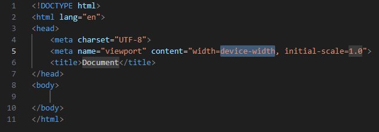
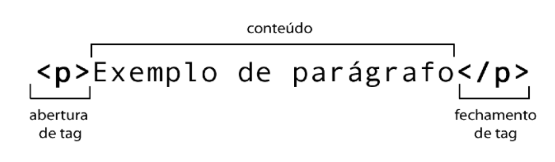
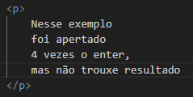
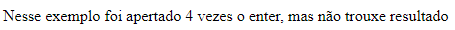
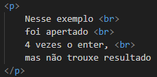
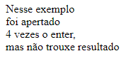
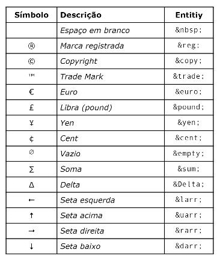
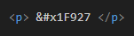
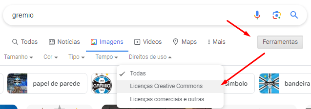
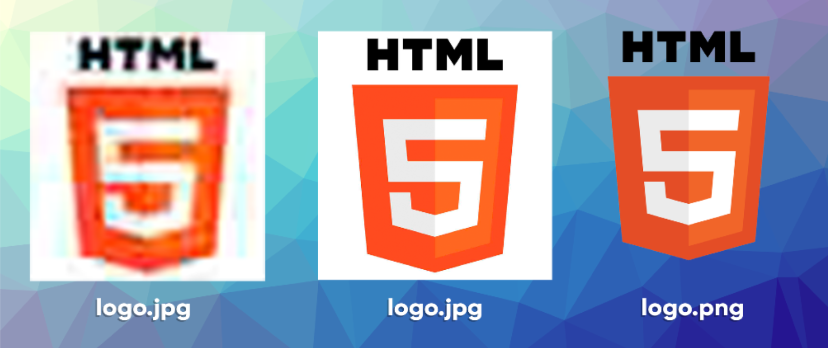

Não se programa em HTML, pois ele é uma linguagem de marcação e não de programação, como o JavaScript. Além disso, é chamado "a HTML" e não "o HTML", até porque é uma LINGUAGEM, e linguagem tem pronome feminino. Por último, HTML serve para dar conteúdo ao seu site e ela é trabalhada pelas tags.
Para usar a HTML, no VS Code, digite "!" e aperte no Enter de seu teclado. Vai aparecer o seguinte código:
<!DOCTYPE html> nos diz que esta sendo utilizada a versão mais recente do HTML, o HTML5.
<html lang="en"> nos diz qual a linguagem que estará o site, nesse caso está em inglês, mas você pode colocar em português ao colocar entre as aspas "pt-br".
<head> é o cabeçalho da página, onde estão contidas as informações sobre o site.
Dentro da tag head temos outras três:
Por último, temos o <body> aqui você coloca o que vai aparecer no seu site.
As tags são como o HTML funciona, elas comandam tudo. Existem tags que tem uma abertura e fechamento, como a tag "tittle", onde o conteúdo é inserido entre as duas, perceba que a tag de fechamento tem uma barra antes. Enquanto tem outras que não tem uma tag de fechamento, como a tag "meta", onde o conteúdo vai dentro dela à direita do nome da tag.
Existem tags que além do conteúdo, elas tem algo a mais, como um link para ir para outro site.
Tome cuidado com as tags absoletas, elas são tags antigas, que ainda não foram removidas, mas não são mais usadas ou estão quase sendo excluídas.
A primeira tag a ser aprendida é a tag <p>, que significa parágrafo e serve para você colocar o texto do seu site, como essa frase que você está lendo. Para colocar tags, basta você escrever o nome dela e apertar no Enter, o conteúdo, no caso da tag "p", vai entre as tags: <p>conteúdo</p>. Dentro da tag "p", você pode utlizar mais de uma linha, não adianta dar Enter. Como no exemplo:
Veja o como fica:
Para isso, precisamos usar uma outra tag: <br>
A tag <br> significa broken line, traduzindo para o português, quebra de linha. E ela é usada para nada mais, nada menos que quebrar as linhas. Utilizando o mesmo exemplo anterior:
Desta vez, trouxe resultado, pois as tags é quem mandam:
Cuidado ao usar várias tags <br> em sequência, pois deixa o código confuso, em vez disso, configure pelo CSS, que você pode encontrar clicando no seu símbolo da página inicial.
Quando você quer colocar alguns símbolos em seu site, deve-se usar códigos, por exemplo, até agora, para mostrar os sinais de "menor que" e "maior que", quando são representadas as tags foi utilizada a entity < (less than) seguida de um ponto e vírgula, e depois a entity > (greater than), também seguida de ponto e vírgula. O conteúdo fica entre elas. Mas por que não se pode apenas colocar os símbolos? Bom, eles têm outras funções, como no caso do "maior" e "menor que", que servem para abrir e fechar tags, e é isso que o computador vai entender.
Existem outros símbolos como estes, veja a tabela abaixo:
Você também pode colocar emojis no seu site. Basicamente, cada emoji tem um código Unicode, basta você descorbir qual é o do emoji que quer utilizar, para isso, pode pesquisar no site emojipedia.org, na sessão das informações técnicas. Cada emoji vem com um "prefixo" 'U+', ele não será necessário, em vez disso, substitua por &#x. A seguir, veja um exemplo de um código:
Agora oberserve o resultado:
Primeiramente, você deve saber que as algumas imagens possuem direitos autorais, ou seja, só algumas pessoas podem usar, logo, se você usar em site, podem te processar, portanto, use apenas imagens de domínio público, que podem ser encontradas no Google Imagens, com a configuração de "Licença Creative Commons". Dessa forma:
Também existem sites que você pode achar imagens com domínio público. Abaixo está listados alguns deles:
Existem muitos outros, mas esses dois são os principais formatos de imagem na criação de sites.
O JPEG é usado para gerar imagens fotográficas com tamanho reduzido. Os arquivos em JPG (em formato JPEG) tem a vantagem de ocuparem pouco espaço em disco, ótima para sites, que precisam ser leves e carregar rapidamente as imagens, mas cuidado ao configurá-las, para elas não ficarem borradas.
O outro formato é o PNG, que também é compactado, não tanto quanto o JPEG, mas se diferencia pela capacidade de configurar a opacidade (transparência) dos pixels. Abaixo temos uma imagem exemplo:
